Yuanzhi Liang*1,2 , Qianyu Feng 3 , Linchao Zhu 2 , Li Hu 1 , Pan Pan 1 , and Yi Yang 3
1 Alibaba DAMO Academy, Alibaba Group 2 ReLER Lab, AAII, University of Technology Sydney 3 Zhejiang University
liangyzh18@outlook.com qianyufeng718@gmail.com linchao.zhu@uts.edu.au hooks.hl@alibaba-inc.com panpan.pp@alibaba-inc.com yangyics@zju.edu.cn
Abstract
Talking gesture generation is a practical yet challenging task that aims to synthesize gestures in line with speech. Gestures with meaningful signs can better convey useful information and arouse sympathy in the audience. Current works focus on aligning gestures with the speech rhythms, which are difficult to mine the semantics and model semantic gestures explicitly. This paper proposes a novel SEmantic Energized Generation (SEEG) method for semanticaware gesture generation. Our method contains two parts: DEcoupled Mining module (DEM) and Semantic Energizing Module (SEM). DEM decouples the semantic-irrelevant information from inputs and separately mines information for the beat and semantic gestures. SEM conducts semantic learning and produces semantic gestures. Apart from representational similarity, SEM requires the predictions to express the same semantics as the ground truth. Besides, a semantic prompter is designed in SEM to leverage the semantic-aware supervision to predictions. This promotes the networks to learn and generate semantic gestures. Experimental results reported in three metrics on different benchmarks prove that SEEG efficiently mines semantic cues and generates semantic gestures. SEEG outperforms other methods in all semantic-aware evaluations on different datasets. Qualitative evaluations also indicate the superiority of SEEG in semantic expressiveness. Code is available via https://github.com/akira-l/SEEG.
1. Introduction
Recently, in synthesizing digital humans, vivid gestures can primarily improve reality, naturalness, and efficient information expression. Especially, talking gestures provide nonverbal cues of semantic expression and emphasize highlights and attitudes woven into our daily communication. Along with digital manipulation techniques, the speechdriven gesture is an emerging application, e.g., digital human animation, visual dubbing in movies, online service, and education. The goal is to simulate artificial embodied agents to perform harmonious gestures aligned with the speech contents [14, 21, 29, 34]. Automated speech-driven gesture generation studies the generation of natural gesture sequences by exploring the relationships between speech and body language. It provides a new opportunity for realistic human-human interaction in virtual platforms.
*This work was performed at Alibaba DAMO Academy, Alibaba Group.

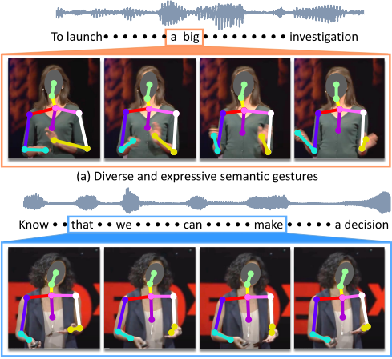
Toward vivid speech-driven gestures, an intuitive expectation is to produce gestures corresponding to the speech contents. Humans naturally respond to their speeches and produce gestures to deliver specific semantics as in human ethology. As shown in Fig. 1, most co-speech gestures are compounded by beat and semantic gestures [8, 15]. Beat gestures are irrelevant to lexical semantics. It is independent to the content of the speech and prefers to respond to the rhythms of sounds. For example, the fast-talker tends to move more frequently in speak gestures. Semantic gestures 1 are apt to express certain speech content with body language, including iconic gestures, metaphoric gestures, and deictic gestures [8]. For example, speakers may raise their hands to emphasize their attitudes, corresponding to "clearly", "definitely", etc. Generating semantic gestures would lead to a vivid and reasonable content-based gesture rather than simply following the beat. However, the prior works of co-speech gestures synthesis [20, 29, 34, 35] do not explicitly produce semantic gestures and fail to model the lexical-semantic relevance between speech and gestures. For instance, when merely learning with the semanticirrelevant cues, i.e., the rhythms of audio and speakers' identities, we achieve a comparable score with state-of-theart methods [34]. This indicates that the current methods are hard to learn semantics explicitly and produce semanticaware gestures.
It is challenging to generate semantic gestures for the following two reasons. First, semantic cues for generating semantic gestures are hard to be mined. The styles and the movements of semantic gestures vary widely among speakers according to different contents. Meanwhile, beat gestures are inclined to intuitive and straightforward responses to the cues from sound, which commonly occur and are easier for the networks to mine. This difference induces semantic cues that are hard to be mined. The network may be relatively inclined to beat gestures and be slacked to investigate semantic cues. Second, semantic gestures and their corresponding texts are not well aligned temporally. As shown in Fig. 2, some gestures may be performed before or after the semantics they conveyed. This leads the network to unfavorably learn semantic gestures since it is hard to receive an explicit hint of semantic correlation via the given data. These two challenges hinder the generation and expression of semantics in gestures.
This paper introduces a novel method to achieve semantic-aware co-speech gesture generation named SEmantic Energized Generation (SEEG). SEEG efficiently mines semantic and beat cues respectively and conducts semantic-aware gesture generation. Specifically, SEEG contains two components, i.e., DEcoupled Mining module (DEM) and a Semantic Energized Module (SEM). DEcoupled Mining module decouples speech input cues into semantic-relevant cues (closely coupled to speech contents) and semantic-irrelevant cues (only beat information). Then, two separate encoders in DEM process Semantic-relevant cues and semantic-irrelevant cues to understand information for semantic and beat gestures. After input decomposition, one encoder focuses on the representation for beat gestures, while the other encoder exploits the diverse semantic information for semantic gestures. This process eases the learning of semantic and beat gestures with huge disparities. The networks enable explicitly mine differential information for the beat and semantic gestures. If we expect the networks to learn semantics, DEM avoids forcing the networks to learn semantics from beat gestures that do not contain semantic denotations. Semantic Energized Module aims to avoid generation degrading to beat gestures. SEM energizes semantic learning by constraining two kinds of similarities: representational similarity and semantic similarity. Representational similarity requires the generation to be similar to the ground truth in appearances. More critically, DEM pursues semantic similarity and encourages the results to present similar semantics compared with the ground truth. In DEM, we additionally introduce a semantic prompt gallery and a semantic prompter network. The prompter is trained by the gallery and fix it in gesture generation. The prompter network is responsible for representing gestures in a semantic view. By producing similar representations under the view of the prompter, the generated gestures are regularized to align semantics conveyed from the ground truth. Rather than directly connecting speech contents to gestures that may be misaligned, SEM energizes semantic learning by restraining both representational similarity and semantic similarity.
1 We collectively refer to the three kinds of gestures as semantic gestures to distinguish them from the beat gesture.
Our main contributions can be summarized as follows:
1. We propose a new SEmantic Energized Generation (SEEG) framework for co-speech gesture generation. SEEG is a semantic-aware gesture generation method that is adept at generating gestures with better semantic expressiveness.
2. We propose DEcoupled Mining (DEM) and Semantic Energized Module (SEM). DEM decouples semanticirrelevant cues in inputs and eases the learning of disparate semantic and beat gestures. DEM encourages the network to learn semantics and produce semantic gestures.
3. In generating semantic gestures, the efficiency and advantages of our method are revealed by three subjective metrics on different datasets and objective human evaluations. We also find that the beat gestures may dominate the co-speech gesture generation. Visualizations show that SEEG achieves significant expressiveness in semantics.

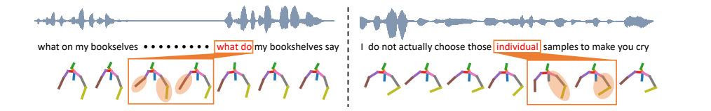
2. Related Work
Speech-driven gesture generation is an emerging issue that aims to generate vivid gestures based on the given speech data. Generally, methods for this problem take the speech data [34, 35] (audio, text, etc.) as input and produce corresponding gestures to simulate the real speaker. This requires various knowledge understanding [33] like human ethology [7, 22, 28, 32], linguistics [19, 27, 30], robotics [11, 25], graphics [3, 17, 34], vision [20, 29, 34], etc. Proposed methods should understand multi-modal and diverse information (speech rhythm from audio, text semantics, personal style from speakers' identities, semantic conveyed frommotions, etc.), then generate reasonable and expressive gestures.
To overcome the above challenges, various works are proposed to explore. To understand the audio data and bridge the audio inputs to the gestures, Taras et al. [20] investigate the network structure to map speech acoustic and semantic features into the feature space of 3D gestures. Moreover, benefiting from an efficient modeling method MoGlow which is controllable for 3D motion synthesis, Alexanderson et al. [3] propose the style-controllable gesture generation model based on the MoGlow. The proposed method can generate diverse and plausible gestures just like the actual human. Ahuja et al. [1] propose MixStAGE, which disentangle the style feature with gesture features and encodes the gestures features to the style space. Mix-StAGE overcomes the challenge of style preservation and generates diverse styles of gestures for different people. As the multi-modalities involved in speech-driven gestures, Yoon et al. [34] explore the embedding and representation of multiple modalities for gesture generation. They consider the trimodal context and construct holistic modeling for all the data. This paper goes further toward semanticaware gesture generation and produces gestures with better semantic expressiveness.
In addition, the metrics for evaluating the generated gestures are also important and challenging. As the uncertainty of human behavior, evaluating the realistic level of generated gestures compared with the actual human maybe still an open question. Some works [1, 3, 14] rely on user studies to measure the quality of generated gestures. Rather than the subjective evaluation from an actual human, some works [1, 14, 29, 34] calculate the distances between generated gesture and the ground truth. In our work, besides the evaluations mentioned above, we further provide a measurement in semantic view. We introduce a new test set named Semantic-aware testing set (SatTED) and a new metric named Semantic-aware Accuracy (SAA). These provide better evaluations of the results in the semantic aspect.
3. SEmantic Energized Generation
We propose SEmantic Energized Generation (SEEG) to empower the learning of semantics in co-speech gesture generation. As shown in Fig. 3, SEEG contains two parts: DEcoupled Mining module (DEM) and Semantic Energized Module (SEM). DEM decouples semantics from inputs and contains two encoders for different inputs correspondingly. The two decoders are responsible for explicitly mining information for beat and semantic gestures. Moreover, SEM involves a semantic prompter and a gesture decoder. The decoder provides the final outputs for gesture generation. Then, the prompter network leverages an aligning loss for gestures which relieves the misalignment for semantics.
3.1. Preliminary
According to the speech data, co-speech gesture generation aims to generate vivid gestures as real speakers. Some works [21, 24, 29] synthesize body gestures, hand gestures, lips, or face key points by taking audio, text, and speaker identities as pre-processed inputs. In this work, we focus on generating upper body gestures by sequentially outputting the key points following [34, 35].
Taking the audio and text as inputs, methods are required to produce vivid speech gestures like real speakers. Generally, methods in this topic also introduce person ID and encode the ID into features. Additionally, the text is pre-processed and represented by pre-trained word vectors [6, 10, 26]. Thus, there are three parts of inputs: audio data xa, text data xw, and ID xi. Then, the final output is the sequential gestural data denoted as ˆ y. It contains the locations of key points for gestures in every time step. Besides, the ground truth gestures y are also extracted from videos and pre-processed [34,35]. All xa, xw, y, and ˆ y correspond to the time step t.

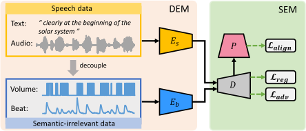
Moreover, we focus on energizing the gestures with better semantic expressiveness in this work. Instead of generating gestures resembling the ground truth, we emphasize producing semantic gestures conveying similar semantics as the ground truth.
3.2. DEcoupled Mining module
In speech gestures [4, 8, 15, 18], beat gestures are intuitive and relatively simple. Semitic gestures are diverse and demand semantic understanding. These induce that the beat cues are easier to be investigated, and the semantic gestures may be ignored in the generation. Then, the method may be trapped in the beat gestures. In our work, we first propose the DEcoupled Mining module (DEM) to learn information for semantic gestures and beat gestures separately and explicitly.
In the speech data, text corresponds to the speech content and is related to the semantics. Meanwhile, audio data reflects the pronunciations, emotions, accents, beats, volume, etc. Some factors in audio merely support semantic expression and do not convey particular semantics. Specifically, the beat and volume of the audio correspond to the rhythm and speed of the speech. They are semantic-irrelevant, and the listener cannot realize the semantics only by the beat and volume. Thus, we decouple these factors to the semanticirrelevant information, which leads to the beat gestures.
Specifically, as shown in Fig. 3, we decouple the input that consists of audio amplitudes and audio onsets, which stand for volume and beat, respectively. For volume information, the audio data with large amplitude values possess large volumes. We defined the volume function as:

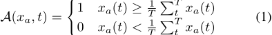
where xa is the amplitude of the audio data, t is the time step, and T is the overall length. We set A(xa, t) = 1 if the amplitude is larger than the average and vice versa. This is because the audio data contains noise and background sound. The amplitude larger than the average indicates that the speaker starts to speak apparently.
Moreover, it is difficult to capture the changing of intonation or speed of the speaker only using volume signals. We introduce the onset strength envelope [12,13,23] to represent the beat information. Onset [12,13] refers to the start points of the sound. The strength envelope [5] can indicate the probabilities of the onset detected in the audio signal. This can represent the beat of the speech audio. We follow [5,23] to extract the onset strength envelope and denote it as O(xa) in our work.
In DEM, two encoders Es and Eb are proposed to mine the information for semantic and beat, respectively. In detail, for beat gestures, Eb utilizes A(xa, t) and O(xa) as inputs. For semantic gestures, Es is designed to learn from xw and xa. Besides, as the standard settings in [1, 34], we also add person ID xi as inputs for encoders.
The procedure of DEM can be formulated as:

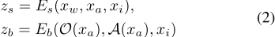
where zs and zb are the features for semantic and beat, respectively. Moreover, both encoders possess similar network structures. They all contain three fully-connected layers to handle the inputs. Then, two additional fullyconnected layers and concatenation operations are utilized to merge three kinds of inputs. Next, a four-layer GRU network is designed to learn the sequential features produced from the above fully-connected layers. More details for the networks are displayed in the supplementary.
3.3. Semantic Energized Module
After mining information for semantic and beat gestures in DEM, we designed a Semantic Energized Module (SEM) to further energize semantic learning against the problem of misalignment. First, we introduce a semantic prompt gallery from the TED dataset [35]. Then, we propose a semantic prompter to learn the gallery individually. The prompter can formulate semantic representation for gestures. Through the prompter, we further leverage supervisions to predictions. This encourages the network to pursue similar representations of semantics by prompter that avoids the network learning misaligned semantics directly.
Semantic Prompt Gallery: The semantic prompt gallery is a small text-gesture collection. It contains five general classes from [4, 8, 9, 15, 18]. We take three noticeable semantics (Listing, emphasize, deictics) conveyed from gestures and two classes (negative, positive) to reflect the speakers’ feelings and attitudes. The gallery is denoted as G = {CListing, CEmphasize, CDeictics, CNegative, CP ositive}, where C∗ is a text-gesture set, and C∗ = {[v1, v2, . . . , vM]; [g1, g2, . . . , gN ]}. vi and gi denote a word and a gesture sequence, respectively. Moreover, we apply M words from [4,8,9,15,18] to construct the text set for each class as v. Besides, [18] presents a versatile collection and collecting method for semantically-congruent gestures. Following [18], we collect N gesture sequences from the TED dataset [35] for every class to formulate g. More details will be presented in supplementary.
Semantic Prompter: We propose a semantic prompter to learn the above gallery independently. As shown in Fig. 4, the semantic prompter P adopts gesture data as inputs and learns to classify gestures into five general semantic labels in the gallery. P consists of two fully connected layers and a four-layer GRU network, in which the fullyconnected layers are utilized to process inputs and outputs. The GRU aims to model the sequential inter-connection of gestures. In all, the prompter can reflect the semantics of gestures and represent the gestures in the semantic view.
Semantic Energized Learning: As shown in Fig. 3, a gesture decoder D is proposed to aggregate both features from Es and Eb and produce gestures as the final outputs, which can be described as yˆ = D(zs, zb), where yˆ denotes the final predictions. D aims to decode gestures considering both information of beat and semantic. It is constructed by a single fully-connected network. Then, to energize semantic learning, SEM leverages two kinds of supervision for prediction yˆ: representational similarity and semantic similarity.
For representational similarity, we constrain P to be similar to the ground truth directly. The regression loss Lreg and adversarial loss Ladv are applied. Lreg [34] contains a smooth L1 loss to reduce the distances between y and yˆ. Meanwhile, the Kullback-Leibler (KL) divergence is included in Lreg to constrain the person ID. Besides, the same discriminator as [34] is added to perform adversarial learning for generated gestures. This also targets the representational similarity of predictions and the ground truth [34].
More important, for semantic similarity, we further propose the semantic aligned loss Lalign. Considering the semantic misalignment, indicating or annotating semantics to particular words may not be proper. In our work, we propose to align semantics conveyed from the gestures. In other words, we encourage the generated results to perform similar semantic representations as ground truth gestures. To this end, we apply the prompter P to represent gestures of predictions and the ground truth and propose a semantic aligned loss Lalign to regularize:


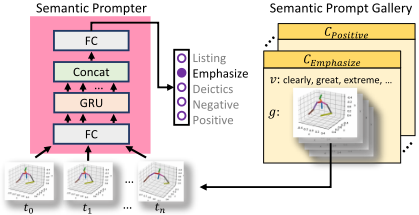
where | ∗ | is the smooth L1 normalization. As P is fixed in training, to solve the above loss function, the output gestures yˆ should reveal similar semantic representations with the ground truth y under the view of P. Lalign does not regulate the predictions to be identical with the ground truth or particular gestures, and it requires similar semantics.
In all, the final loss function L can be formulated as:

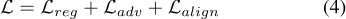
4. Experiments
In this section, we discuss the details of SEEG and evaluate SEEG with various metrics in different datasets.
Implementation Details: Our network designs follow the structures of the generator in [34] and only change some fully-connected layers to fit the inputs. To perform a fair comparison, all the other settings, like the optimizer, learning rate, etc., are the same with [34]. Besides, for training the prompter network, we utilize random clipping, random resizing, and cutmix [36] to augment the gestures in the gallery. We train the prompter network with 100 epochs with the SDG optimizer and learning rate 0.001.
In addition, we collect the semantic gallery with M = 25 and N = 5. To be noticed, there are two significant differences between our semantic gallery and word-pose dictionary in previous work [21]. 1). Only general classes for semantics are defined. No specific words map particular gestures. This property avoids the misalignment between words and gestures in the gallery. 2). The gallery is only applied to train P. It is not practical and not necessary to collect a comprehensive dictionary for training. The prompter network is not responsible for recognizing all possible semantics in gestures. It only needs to reflect some generally possible semantics in the gallery.
Datasets: We test our method based on the TED dataset [35], the current largest and standard dataset for speech-driven gestures [34,35]. As in [34], it is constructed based on TED videos and contains the 3D pose data extracted from the videos. The dataset also includes the speech audio and transcribed speech text [34].
Besides, some gestures in the TED dataset are not expressive and may not convey explicit semantics. Meanwhile, some introverted speakers may not tend to provide apparent movements in speech. To reflect the improvements in the semantic aspect, we provide a Semantic-aware test set (SatTED) based on the above dataset in [34]. Specifically, we re-rank the testing set of the TED dataset based on the confidences of P and collect about the top 50% data as SatTED. The original test set in [34] contains 25,930 samples. Our SatTED includes 12,000 samples and more than 7.5 hours. We compare methods in the SatTED and further discuss the superiority of our method in the semantic aspect.
Evaluation Metrics: We evaluate our method based on three metrics:
1) FGD: evaluating the distances between the features of predictions and the ground truth. It robustly reflects the similarity between gestures in appearances.
2) Diversity metrics [16]: the measurement of diversity and flexibility. As expressive speakers tend to provide various gestures to support their expressions [15,18], this metric can reflect the naturalness and semantic correlation to some degree.
3) Semantic-Aware Accuracy (SAA): we additionally propose a Semantic-Aware Accuracy (SAA) as the measurement for semantic expressiveness. With the semantic prompter, we can label the predicted gestures for semantic classes. Meanwhile, for the speech content, the semantic label can be assigned by voting. For every word in a sentence of the speech, we search the most similar description v in the gallery and assign the corresponding class C∗ as the label of this word. After voting for every word, we select the class with the highest voting value as the label for the current sentence. Then, with the labels of gestures and sentences, we calculate the accuracy as SAA.
It is worth noting that Lalign supervised the semantic expressions of predicted gestures and the ground truth gestures, which avoid the problem of misalignment. It does NOT supervise that the gestures should correspond to the text. Meanwhile, SAA describes the text-gesture correlation. This is a higher requirement since the ground truth may also not reflect the semantics closely. SAA measures the semantic expressions in an ideal condition that all gestures are semantic gestures.
Subjective Evaluation: We perform the user study through actual humans to evaluate the gestures. We random sample 20 pieces of speech audio, text, and the gestures of actual humans, Trimodal Context [34], and ours. Then, we publish these as the questionnaire for 50 different people to grade the gestures by three factors: naturalness, speechgesture correlation, and gesture frequency. The factors are commonly used in gesture evaluation as in [31]. The range of grades is from 0 to 10. We collect all the questionnaires and calculate the average marks in experiments.

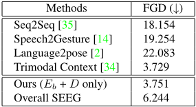
Recognized table text (check against the image)
| Methods | FGD (↓) |
|---|---|
| Seq2Seq [35] | 18.154 |
| Speech2Gesture [14] | 19.254 |
| Language2pose [2] | 22.083 |
| Trimodal Context [34] | 3.729 |
| Ours (Eb + D only) | 3.751 |
| Overall SEEG | 6.244 |
4.1. Quantitative Evaluation
Comparisions with state-of-the-art models: We first compare the values of FGD based on the TED dataset. We train the encoder Es with decoder D individually, generating gestures based on semantic-irrelevant data without the prompter network. This corresponds to the generation of beat gestures. As shown in Table 1, With Es + D only, our result compares favorably to state-of-the-art methods in FGD, which utilizes comprehensive data from speech. This indicates that the network can achieve similar FGD to the recent method without mining any semantic cues. Only by mining the semantic-irrelevant data, the network can 'pretend' to produce meaningful gestures. Though we expect the network to learn semantics and produce expressive semantic gestures, the networks can also perform well without learning any semantics. This reveals two defeats in current research: 1). The beat gestures may dominate the dataset. Meanwhile, the semantic cues are hard to be mined with the comprehensive inputs. Thus, decoupled learning is valuable. DEM separately learn cues for beats and semantics, which guide the network not to be trapped in beat gestures. Besides, rather than the method side, a new sub-set with a larger ratio of semantic gestures is also required to uncover the semantic expressiveness of results. 2). FGD may be solvable in the current dataset by merely considering beat gestures. Merely measuring the distances between predictions and the ground truth is not enough. More semanticaware measurements should be introduced. To solve the above defeats, the SatTED dataset and SAA are proposed in our work.
Meanwhile, our overall method in FGD also outperforms previous methods with large gaps. Though slightly lower than Es + D, our overall method also achieves competitive results than the current state-of-the-art. Since SEEG method is energized by SEM and tends to be more expressive and diverse, it may not completely follow the ground truth and focus on semantics.

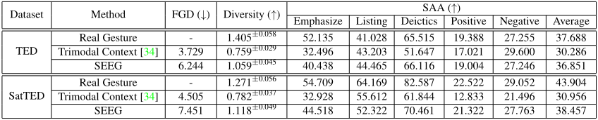
Recognized table text (check against the image)
| Dataset | Method | FGD (↓) | Diversity (↑) | SAA (↑) | |||||
|---|---|---|---|---|---|---|---|---|---|
| Emphasize | Listing | Deictics | Positive | Negative | Average | ||||
| Real Gesture | - | 1.405±0.058 | 52.135 | 41.028 | 65.515 | 19.388 | 27.255 | 37.688 | |
| TED Trimodal Context [34] | 3.729 | 0.759±0.029 | 32.496 | 43.203 | 51.647 | 17.021 | 29.600 | 30.286 | |
| SEEG | 6.244 | 1.059±0.045 | 40.438 | 44.465 | 66.116 | 19.004 | 27.246 | 36.851 | |
| Real Gesture | - | 1.271±0.056 | 54.709 | 64.169 | 82.587 | 22.522 | 29.052 | 43.904 | |
| SatTED Trimodal Context [34] | 4.505 | 0.782±0.037 | 32.928 | 55.612 | 61.844 | 12.833 | 21.496 | 30.956 | |
| SEEG | 7.451 | 1.118±0.049 | 44.518 | 52.322 | 70.461 | 21.322 | 27.763 | 38.457 | |
Semantic-aware Evaluation: We compare all the metrics in two datasets as in Table 2. We also display all the semantic-aware accuracy in every class from the gallery. Results demonstrate that our method shows significant improvements in diversity and SAA than Trimodal Context [34], the current state-of-the-art in co-speech gesture generation.
Specifically, though the values of FGD are slightly lower, the diversity of our results is far better than [34]. With the SatTED dataset, the diversity of our method even approaches the real gestures of ground truth. Meanwhile, the semantics conveyed in our results are more recognizable and significant. Almost all values of SAA in every class and the average are better than Trimodal Context [34]. All these results show that SEEG is comparable in stimulating the gestures of actual humans and capable of understanding the semantics. Besides, SEEG achieves higher results than the ground truth in some categories of SAA since the ground truth may be beat gestures and do not respond to corresponding semantics.
In addition, the SatTED possesses a larger ratio of semantic gestures and is hard to be solved by the current method. As shown in Table 2, our method presents more significant improvements in this dataset. Results demonstrate that our method effectively boosts semantic learning for gestures and conducts a better semantic-aware generation.
Effect of Semantic Decouple: In our work, we decouple the semantics from inputs and enforce the networks to mine information for semantic and beat gestures separately. As in method design, we expect to achieve semantic gestures with Es + SEM, beat gestures with Eb + D only, and the total outputs considering both sides (Overall). In this section, we experiment and verify the three parts as in Table 3. Specifically, we train Eb + D only with Lreg and Ladv. Es + SEM is trained with Es + D with L. Then, to show the interactions between Es and Eb in the overall pipeline, we take the overall SEEG training from scratch with all modules and separately test each module. As Table 3, for Eb + D overall, we test the results by padding features zb from Eb with zero. Similarly, Es + D in overall pads features zs with zero.

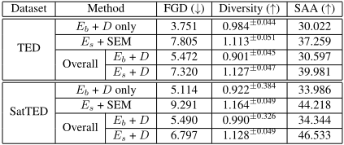
Recognized table text (check against the image)
| Dataset | Method | FGD (↓) | Diversity (↑) | SAA (↑) | |
|---|---|---|---|---|---|
| TED | Eb + D only | 3.751 | 0.984±0.044 | 30.022 | |
| Es + SEM | 7.805 | 1.113±0.051 | 37.259 | ||
| Eb + D | 5.472 | 0.901±0.045 | 30.597 | ||
| Overall Es + D | 7.320 | 1.127±0.047 | 39.981 | ||
| SatTED | Eb + D only | 5.114 | 0.922±0.384 | 33.986 | |
| Es + SEM | 9.291 | 1.164±0.049 | 44.218 | ||
| Eb + D | 5.490 | 0.990±0.326 | 34.344 | ||
| Overall Es + D | 6.797 | 1.128±0.049 | 46.533 | ||
As shown in Table 3, Eb + D only achieves higher performances in FDG metrics but shows significant decreases in diversity and SAA since it is unavailable to learn semantics with semantic decoupled inputs. Meanwhile, the isolated training with Es and D tends to learn semantics only and may not perform similarly to the ground truth. This leads the results to obtain significant improvements in SAA but becomes worse in FGD. Moreover, in the overall pipeline, similar regularities also occur compared with training individually. In comparison, the learning of two parts would not be too radical. As a part of the overall pipeline, both Eb and Es acquire improvements.
Ablation Study for Semantic Prompter: SEM relies on the semantic prompter to learn semantics in gestures. The impact of the prompter network for semantic learning is explored in this section. We experiment with the SEM and overall pipeline with or without a semantic prompter, respectively. As shown in Table 4, without the semantic prompter, both semantic-aware performances like diversity and SAA degrade. Meanwhile, removing the prompter network leverages the improvements in FGD. The individual Es + D without a prompter network performs similarly to the method in [34].

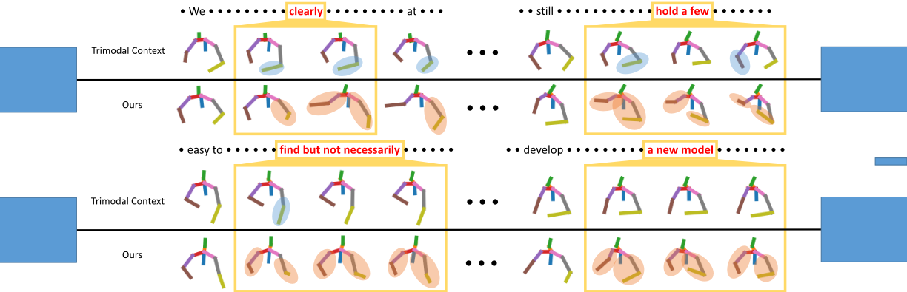

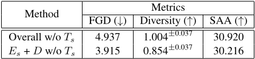
Recognized table text (check against the image)
| Method | Metrics | ||
|---|---|---|---|
| FGD (↓) | Diversity (↑) | SAA (↑) | |
| Overall w/o Ts | 4.937 | 1.004±0.037 | 30.920 |
| Es + D w/o Ts | 3.915 | 0.854±0.037 | 30.216 |
4.2. Qualitative Evaluation
Subjective Evaluation by User Study: We collect questionnaires from different volunteers and compute the average scores in different factors. The factors are all regular questionnaire items as in [31]. The statistical results are shown in Fig. 6. To investigate the performances of parts in our method, we train Eb + D only as of the beat gestures of our method (Beat), Eb + SEM as the semantic gestures of our method (Semantic), and the entire method (Overall), respectively. We compare our method with the current state-of-the-art and the ground truth. In comparison, our method shows significant improvements in all three factors. Moreover, the semantic gestures perform worse in naturalist and frequency but achieve remarkable advantages in speech-gesture correlation. This corresponds to the design of SEM, which focuses on semantic learning and may deviate from the ground truth.
Visualization: We showcase the results of our method and compare them with the current state-of-the-art [34]. In examples of generated gestures, as shown in Fig. 5, significant responses occur corresponding to some words (e.g., clearly, at the beginning, quit a, available, easy, first step). The visualizations prove that our method learns semantics better and generates vivid gestures with semantic expressiveness.

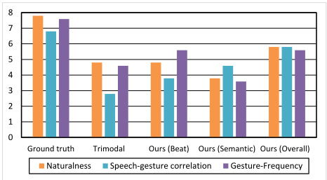
5. Conclusion
In this paper, a novel method for semantic-aware gesture generation is proposed. The proposed method contains two parts: DEcoupled Mining module (DEM) and Semantic Energized Module (SEM). DEM decouples semantics from inputs and forces the network to mine information for semantic and beat gestures. SEM contains a semantic prompter to leverage semantic-based supervision for the networks and produces semantic gestures. Experiments in various metrics, user study, and visualizations prove that the proposed method learns semantics better and produces semantic gestures corresponding to the speech content.
References
[1] Chaitanya Ahuja, Dong Won Lee, Yukiko I Nakano, and Louis-Philippe Morency. Style transfer for co-speech gesture animation: A multi-speaker conditional-mixture approach. In European Conference on Computer Vision, pages 248265. Springer, 2020. 3, 4
[2] Chaitanya Ahuja and Louis-Philippe Morency. Language2pose: Natural language grounded pose forecasting. In 2019 International Conference on 3D Vision (3DV), pages 719-728. IEEE, 2019. 6
[3] Simon Alexanderson, Gustav Eje Henter, Taras Kucherenko, and Jonas Beskow. Style-controllable speech-driven gesture synthesis using normalising flows. In Computer Graphics Forum, volume 39, pages 487-496. Wiley Online Library, 2020. 3
[4] Zeynep Azar, Ad Backus, and Aslı Özyürek. Language contact does not drive gesture transfer: Heritage speakers maintain language specific gesture patterns in each language. Bilingualism: Language and Cognition, 23(2):414428, 2020. 4, 5
[5] Sebastian Böck and Gerhard Widmer. Maximum filter vibrato suppression for onset detection. In Proc. of the 16th Int. Conf. on Digital Audio Effects (DAFx). Maynooth, Ireland (Sept 2013), volume 7, 2013. 4
[6] Rishi Bommasani, Kelly Davis, and Claire Cardie. Bert wears gloves: Distilling static embeddings from pretrained contextual representations. 2019. 3
[7] Diana Boxer. Social distance and speech behavior: The case of indirect complaints. Journal of pragmatics, 19(2):103125, 1993. 3
[8] Justine Cassell. A framework for gesture generation and interpretation. Computer vision in human-machine interaction, pages 191-215, 1998. 2, 4, 5
[9] Lisette De Jonge-Hoekstra, Ralf FA Cox, Steffie Van der Steen, and James A Dixon. Easier said than done? task difficulty's influence on temporal alignment, semantic similarity, and complexity matching between gestures and speech. Cognitive science, 45(6):e12989, 2021. 4, 5
[10] Jacob Devlin, Ming-Wei Chang, Kenton Lee, and Kristina Toutanova. Bert: Pre-training of deep bidirectional transformers for language understanding. arXiv preprint arXiv:1810.04805, 2018. 3
[11] Masrur Doostdar, Stefan Schiffer, and Gerhard Lakemeyer. A robust speech recognition system for service-robotics applications. In Robot Soccer World Cup, pages 1-12. Springer, 2008. 3
[12] Daniel PW Ellis. Beat tracking by dynamic programming. Journal of New Music Research, 36(1):51-60, 2007. 4
[13] Daniel PW Ellis and Graham E Poliner. Identifyingcover songs' with chroma features and dynamic programming beat tracking. In 2007 IEEE International Conference on Acoustics, Speech and Signal Processing-ICASSP'07, volume 4, pages IV-1429. IEEE, 2007. 4
[14] Shiry Ginosar, Amir Bar, Gefen Kohavi, Caroline Chan, Andrew Owens, and Jitendra Malik. Learning individual styles of conversational gesture. In Proceedings of the IEEE/CVF Conference on Computer Vision and Pattern Recognition, pages 3497-3506, 2019. 1, 3, 6
[15] Susan Goldin-Meadow and Martha Wagner Alibali. Gesture's role in speaking, learning, and creating language. Annual review of psychology, 64:257-283, 2013. 2, 4, 5, 6
[16] Chuan Guo, Xinxin Zuo, Sen Wang, Shihao Zou, Qingyao Sun, Annan Deng, Minglun Gong, and Li Cheng. Action2motion: Condite0ioned generation of 3d human motions. In Proceedings of the 28th ACM International Conference on Multimedia, pages 2021-2029, 2020. 6
[17] Gustav Eje Henter, Simon Alexanderson, and Jonas Beskow. Moglow: Probabilistic and controllable motion synthesis using normalising flows. ACM Transactions on Graphics (TOG), 39(6):1-14, 2020. 3
[18] Sarah S Hughes-Berheim, Laura M Morett, and Raymond Bulger. Semantic relationships between representational gestures and their lexical affiliates are evaluated similarly for speech and text. Frontiers in psychology, 11:2808, 2020. 4, 5, 6
[19] William A Kretzschmar Jr, William A Kretzschmar, and William A Kretzschmar Jr. The linguistics of speech. Cambridge University Press, 2009. 3
[20] Taras Kucherenko, Patrik Jonell, Sanne van Waveren, Gustav Eje Henter, Simon Alexandersson, Iolanda Leite, and Hedvig Kjellström. Gesticulator: A framework for semantically-aware speech-driven gesture generation. In Proceedings of the 2020 International Conference on Multimodal Interaction, pages 242-250, 2020. 2, 3
[21] Miao Liao, Sibo Zhang, Peng Wang, Hao Zhu, Xinxin Zuo, and Ruigang Yang. Speech2video synthesis with 3d skeleton regularization and expressive body poses. In Proceedings of the Asian Conference on Computer Vision, 2020. 1, 3, 5
[22] Joseph D Matarazzo, Arthur N Wiens, Russell H Jackson, and Thomas S Manaugh. Interviewee speech behavior under conditions of endogenously-present and exogenouslyinduced motivational states. Journal of Clinical Psychology, 1970. 3
[23] Brian McFee, Colin Raffel, Dawen Liang, Daniel PW Ellis, Matt McVicar, Eric Battenberg, and Oriol Nieto. librosa: Audio and music signal analysis in python. In Proceedings of the 14th python in science conference, volume 8, pages 18-25. Citeseer, 2015. 4
[24] Evonne Ng, Shiry Ginosar, Trevor Darrell, and Hanbyul Joo. Body2hands: Learning to infer 3d hands from conversational gesture body dynamics. In Proceedings of the IEEE/CVF Conference on Computer Vision and Pattern Recognition, pages 11865-11874, 2021. 3
[25] Stanislav Ondáš, Jozef Juhár, Matúš Pleva, Martin Lojka, Eva Kiktová, Martin Sulír, Anton ˇCižmár, and Roland Holcer. Speech technologies for advanced applications in service robotics. Acta Polytechnica Hungarica, 10(5):45-61, 2013. 3
[26] Jeffrey Pennington, Richard Socher, andChristopher DManning. Glove: Global vectors for word representation. In Proceedings of the 2014 conference on empirical methods in natural language processing (EMNLP), pages 1532-1543, 2014. 3
[27] David Poeppel, William J Idsardi, and Virginie Van Wassenhove. Speech perception at the interface of neurobiology and linguistics. Philosophical Transactions of the Royal Society B: Biological Sciences, 363(1493):1071-1086, 2008. 3
[28] Robert R Provine. Laughter punctuates speech: Linguistic, social and gender contexts of laughter. Ethology, 95(4):291298, 1993. 3
[29] Shenhan Qian, Zhi Tu, Yihao Zhi, Wen Liu, and Shenghua Gao. Speech drives templates: Co-speech gesture synthesis with learned templates. In Proceedings of the IEEE/CVF International Conference on Computer Vision, pages 1107711086, 2021. 1, 2, 3
[30] Jørgen Rischel. Formal linguistics and real speech. Speech Communication, 11(4-5):379-392, 1992. 3
[31] Pieter Wolfert, Nicole Robinson, and Tony Belpaeme. A review of evaluation practices of gesture generation in embodied conversational agents. arXiv preprint arXiv:2101.03769, 2021. 6, 8
[32] Nessa Wolfson. The bulge: A theory of speech behavior and social distance. Penn Working Papers in Educational Linguistics, 2(1):55-83, 1990. 3
[33] Yi Yang, Yueting Zhuang, and Yunhe Pan. Multiple knowledge representation for big data artificial intelligence: framework, applications, and case studies. Frontiers of Information Technology & Electronic Engineering, 22(12):15511558, 2021. 3
[34] Youngwoo Yoon, Bok Cha, Joo-Haeng Lee, Minsu Jang, Jaeyeon Lee, Jaehong Kim, and Geehyuk Lee. Speech gesture generation from the trimodal context of text, audio, and speaker identity. ACM Transactions on Graphics, 39(6), 2020. 1, 2, 3, 4, 5, 6, 7, 8
[35] Youngwoo Yoon, Woo-Ri Ko, Minsu Jang, Jaeyeon Lee, Jaehong Kim, and Geehyuk Lee. Robots learn social skills: End-to-end learning of co-speech gesture generation for humanoid robots. In 2019 International Conference on Robotics and Automation (ICRA), pages 4303-4309. IEEE, 2019. 2, 3, 4, 5, 6
[36] Sangdoo Yun, Dongyoon Han, Seong Joon Oh, Sanghyuk Chun, Junsuk Choe, and Youngjoon Yoo. Cutmix: Regularization strategy to train strong classifiers with localizable features. In Proceedings of the IEEE/CVF International Conference on Computer Vision, pages 6023-6032, 2019. 5